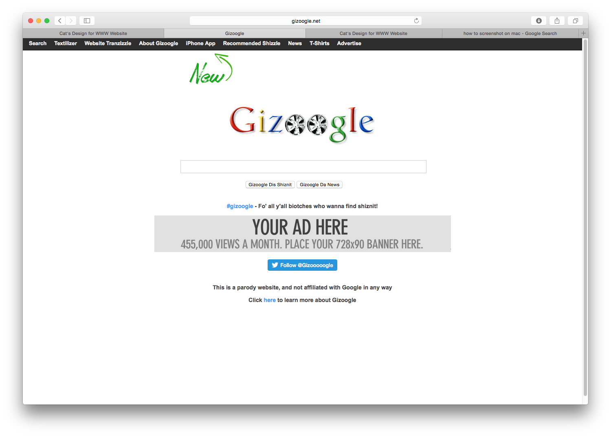
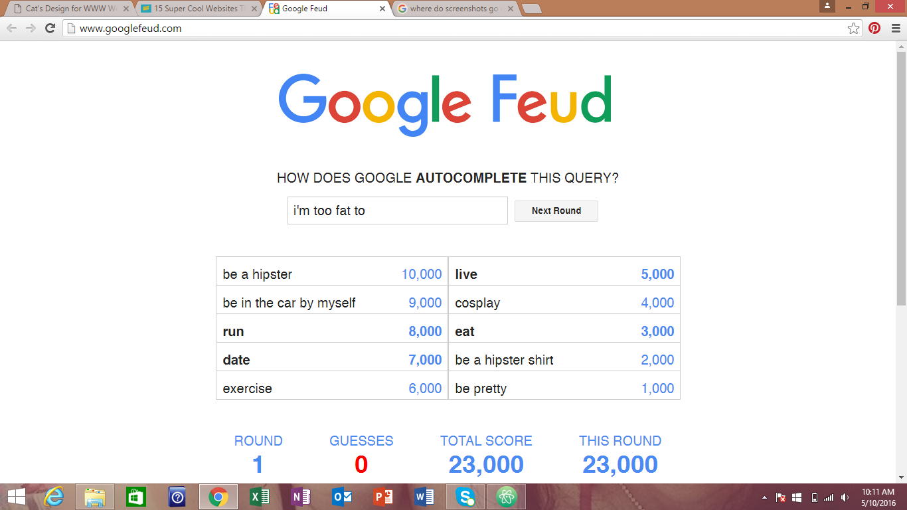
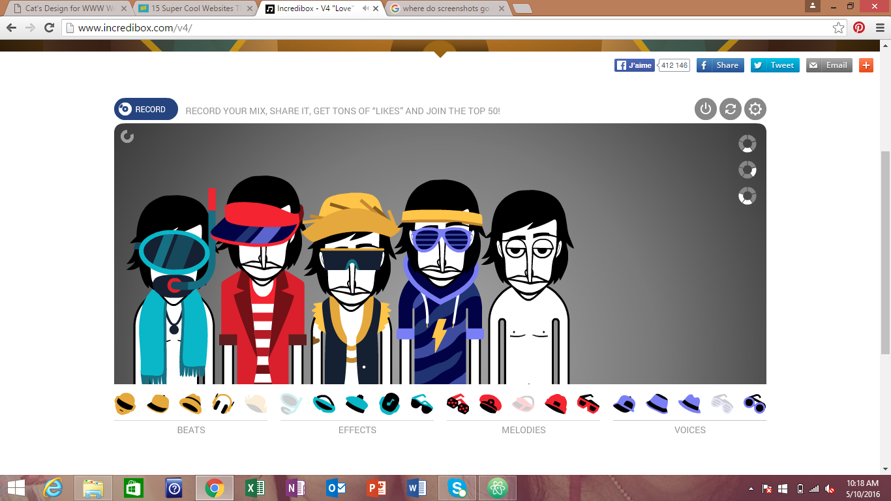

This website is simple, but it's one of the most entertaining and comical sites I've ever seen. You can type in a word, phrase, or senetence and then translate it to Snoop Dogg lingo. The fact that this site is set up almost exactly like Google adds to the humor of it.
This website is really cool because it's so interactive! You can draw a stick figure who will go on different adventures. As if that wasn't cool enough, you get to draw items for him to get through his quest. Most of the features on the website are handrawn, which is not common for websites. This page welcomes users to tap into their imagination.

This is the website of a stage and set designer, Katarzyna Konkowska. The first thing about this website that grabs my attention is the beautiful animation that flows across the screen each time you navigate to a different section. The navigation is also simple and easy to figure out. The photos act as links to a selection of even more photos of each stage/set design to look at. What really completes this website is the atmospheric background music that plays as you navigate through it. It's peaceful and mysterious and really immerses you into the artist's unique designs.

I have wasted plenty of time on this website. This is basically the google version of family feud, where you try to guess how google auto completes searches. You'd be surprised by some of the things people search for.
If you are musically inclined, then this is the perfect website to kill some time! You can drag and drop clothes and accessories onto beatboxers to make them do different sound effects.
In need of some entertainment? Check out this website that's full of honest slogans. You'll be scrolling for hours.
.png)
I love the interactive design of this website. You can't do much, but what you can do is really adorable! The longer you repeatedly click on the little 3D dragon, the harder he sneezes when you stop.
.png)
Wanna see Mt. Everest without spending thousands to travel there only to be killed by an avalanche? Check out this 3D tour of the summit! This website is super interactive. You can virtually climb at your own pace as the side bar tells you how high you are, and there are even interesting facts displayed along the way.
.png)
I'm a huge fan of reading (and of purchasing more books even though I haven't finished reading the one I'm currently working on), so this website really jumped out at me. Not only is it useful for taking books that you've already read and finding even more books that you'll love, the design is cool and easy to navigate as well.
.png)
This website is mindblowing and kinda creepy at the same time. It gives you a huge zoomed out image of what all of the profile pictures of Facebook look like put together. You can click anywhere to zoom in. So baasically, random people could have seen your face while browsing this site, but the chances of you finding your own face are probably pretty small.
.png)
What's one of the best ways to pass time? Laughing at other people's stupidity, of course. This is a parody site that reveals some pretty funny Facebook fails.
.png)
This is a pretty useful website if you're trying to diet. All you have to do is enter how many calories you want to eat in a day, choose how many meals you want that split into, and it gives you endless meal combinations.
.png)
Need some gifs for your tumblr page, powerpoint presentation, or to just send to your friends? This website lets you locate gifs using tags. You can find a gif of pretty much anything. And the website design has got some nice colors too!
.png)
If you're indecisive like me, then you will appreciate this website. It provides movie suggestions for when you can't decide on a good movie to watch. It's easy to use and you can even pick from different genres.
.png)
This is perhaps one of the best websites that I came across. Have you ever watched a move or tv episode and heard like the best song ever but didn't know the name of the song? Well you could either wait for the ending credits or you could use this website to look up movies and tv shows and see what songs are played in them.
.png)